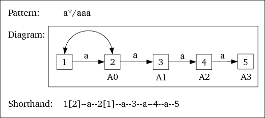
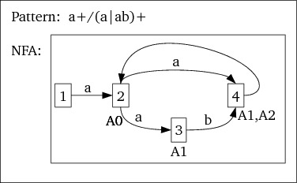

0.1: Technical documentation (Sat, 05 Mar 2011 12:02:43 +0100 )
- 0.1.1: flexc++
- 0.1.2: Notation, Terminology
- 0.1.2.1: Notations
- 0.1.2.2: Example patterns with an LA operator
- 0.1.2.3: The FinAc computing algorithm
- 0.1.3: The parser
- 0.1.4: Code (action) blocks
- 0.1.5: The class State
- 0.1.6: States
- 0.1.7: Rules and the class Rule
- 0.1.8: Patterns
- 0.1.9: The class PatternVal
- 0.1.10: Ranges
- 0.1.11: The class DFAs
- 0.1.12: The DFA
- 0.1.13: The rows of the DFA: DFAROW
- 0.1.14: Patterns containing the lookahead operator
- 0.1.14.1: processFinAc
- 0.1.14.2: DFA::propagateLAsteps
- 0.1.14.3: DFA::processRule
- 0.1.14.4: DFA::processRow
- 0.1.14.5: DFA::inspect
- 0.1.15: Generating Code
- 0.1.15.1: The range-table
- 0.1.15.2: The DFAs
- 0.1.15.3: The Final-Accept info array
- 0.1.16: Run-time operations
- 0.1.17: Code generation
Ax: accept count, indicating that x state transitions have been performed since the initial accepting state (A0).++Ax: incrementing accept count. The accept count of this state is incremented each time this state is reached againFx: A final state with an associated accept count.- pre-A-state: any NFA state in a pattern preceding its
A0state. - post-A-state: any NFA state in a pattern at or beyond its
A0state. - LA operator: the lookahead operator (
'/'). x[y]: at statexan empty transition to stateyis allowed. See figure 1.- The pattern
a/a+:
Figure 1: The pattern a/a+
The accept count of this state is A0, and state 2 is its Final state
- The pattern
a*/aaa: Start counting from theA0state until the F-state has been reached.
Figure 2: The pattern a*/aaa
The resulting DFA becomes:
Input Ch StateSet a Fin/Acc #steps 12 123 A0 123 1234 A1 1 1234 12345 A2 2 12345 12345 F, A3 3 - While creating the NFA, count transitions from A0 (as shown in the NFA diagrams above (when there are multiple routes: assign the highest count to an NFA state)).
- After creating the DFA, start to follow transitions from the A0 rows.
- for DFA rows containing pre-A NFA states use the incremented A count of the DFA row from which a transition to the current row was made;
- If a Final (F) state is reached, while transiting from a row that's also a Final state to the current row the the A-count of the originating DFA row is kept.
- If a DFA row is reached merely consisting of post-A NFA states: set this state's Accept count to `incrementing' and initialize it to the highest Accept count of the NFA states defining this DFA row.
d_type: the type represented by the State (EMPTY, FINAL, CHARSET, BOL), the internally usedUNDETERMINED__andEOF__types, or the ascii-value of a single character.d_accept: a flag, which is -1 unless the state represents an accepting state. Patterns using a lookahead operator have a state in which the accept flag is set at the location of the lookahead (LA) operator. In fact the LA operator never literally enters the pattern's state. In the sequence ofStates its presence can be inferred from the existence of aStatewhich has the accept flag set.Values unequal -1 indicate that this is an accepting state. If the state is a final state then
d_acceptdefines the length of the the tail when a lookahead operator is used.- An index into the Rules object to the rule object defining the pattern (-1 if the rule does not use the LA operator, indicating that its index is irrelevant);
- A shared pointer to
StateData. The classStateDatais derived from SemVal, and contains two indices: theStateindices of the states following the currentState. The second index (d_next2) may be 0, indicating that there is no second continuation state. A second continuation state occurs when the alternate operator ('|') is used in a pattern. - The
next1()member of the state containing theapattern returns the index of the state containing thebpattern. - The
next1()member of the state containing thebpattern returns the index of the final state - The final state's
next1andnext2members return 0 - Except for the pattern using the
|-operator (pattern | pattern) allnext2members return 0. The implementation of the|-operator is described here. EOF_PATTERN- recognized by the lexer, matching<<EOF>>.STRING- recognized by the lexer, matching a literal string.SECTION_DELIMITER- recognized by the lexer. The%%sequence in fact ends the rule sectionTO BE INVESTIGATED.
character_class: a self-defined or predefined character class like[a-c]or[[alpha]].plain_characters: any plain character, likeainape.ESCAPE_SEQUENCE: characters defined by escape sequences, like\x2a. To the parser they are plain characters.'.': the any-character-but-newline matching pattern.pattern pattern: two patterns immediately following each other. These two patterns have the precedence ofCHARACTER, and are combined left-associatively.'^' pattern: the begin-of-line pattern.pattern '|' patternTwo alternative continuations.pattern quantifier: quantifiers are*, +and?.'(' incParen pattern ')' decParena pattern nested in parenthesespattern '{' start_interval_m interval '}' regex_block_ma repetition using curly braces (an interval repetition)pattern '/' patterna lookahead pattern ($ is handled by the scanner)- First the indices of two free
Statevector locations are requested (see thenext2description in theStatesclas). - The
Stateat the first state index is then set to a state containing the plain character, linking to the next free state which has been initialized to theFINALstate byStates::next2. - Then the
PatternValis embedded in aSemVal(see theSemValclass description). - The
SemValis then returned in astd::shared_ptr(cf. figure 9). - A
PatternValis constructed for the^operator. This is done by requesting aState::BOLfromState::factory, returning a pair of state indices matching the begin-of-line state. - The
patternfollowing the^is available through theSemVal, passed to thePatternVal::bolfunction. This pattern too has begin and end state indices. - The two sets of states are now concatenated (see the description of
the concatenation process below), the BOL states preceding the
available
patternstates, and the concatenated states are returned as one single series of states, having one begin state and one final state (see figure 10). - Concatenation starts with two
SemValobjects. - The
SemValobjects are downcast to, resp. alhs PatternValand arhs PatternVal. - With lookahead patterns, the
lhspattern may be an accepting state. I.e., once the full pattern has been recognized only the lhs is actually matched. E.g., after recognizinga/bais returned as matched, asais the accepting pattern. When concatenating the lhs's end state disappears and is replaced by the rhs's begin state. Therefore: - The rhs's begin state's accepting flag is set to the lhs's end state's accepting flag.
- The
lhs.end()state is assigned the value of therhs.begin()state - The
rhs.begin()state is marked as free - A new
PatternValis returned asSemVal *having itsbeginindex set tolhs.begin()and itsendidex set torhs.end(). - It adds another element to its
d_dfavector, containing the name of the mini scanner (obtained from theRules'sNameVector) and an initializedDFAobject (see section 0.1.12) - Next it calls
buildfor the initializedDFA, passing it the vector of indices of the start states for that mini scanner.Buildwill construct the mini scanner's DFA, see section 0.1.12. d_rule: the index of the rule using the LA operator;d_accept: the accept count at this point (the accept count is the number of transitions after observing the LA operator, it isFinAcInfo::PRE_A_STATEfor pre-acceptDFARows);d_final: the final state accept count. It equalsFinAcInfo::FINAL_NOT_SETif undetermined;FinAcInfo::NOT_FINALif this is not a Final state; whend_final >= 0it represents the Final state accept count;d_inc: aboolwhich istrueif this is an incrementing Accept state: |TAIL| is incremented each time this state is reached (as with patterns like `ab/a+', where |TAIL| is incremented while processing theasymbols matching thea+pattern). See also the (INCREMENTINGACCEPT).- It receives the rule's accepting state number and an (initial) accept count of 0.
- Then, in preparation of the recursive calls the step count is incremented if the current state is not an empty edge.
- As each state has two links (which may not both be used) the recursive calls follow these links, receiving the possibly incremented stepcount.
- When there are multiple routes to a given state then the accept count is set to the largest step count value.
DFA::processRuleis an indirectly recursive function receiving a rule index; a DFA row index (initially 0); an indication whether its 'parent' row (i.e., the DFA row offering a transition to the current row was a Final state for the current rule (initially: not final)); and the number of accept steps so far (initially -1).- At the DFA row currently under inspection it tries to locate the provided rule index in the DFA row's FinAcInfo objects.
- If found then that rule is an LA rule that is active in the
current DFA row. It then calls
DFA::processRowto determine that row's accept and final count for that particular rule, passing it the rule'sFinAcInfo; rule index; DFA row index; parent final status and current tail size. - Part I is only executed if there's at least one post-A state present
in the set of NFA states represented by the current DFA row. If this holds
true then the following steps are performed:
- At the row for which this happens for the first time tailSize is set to 0.
- Then, if the current row can be a final state for the rule that's currently under inspection its |TAIL| is determined.
- If the |TAIL| was determined during an earlier phase of the algorithm, then --following the principle that |TAIL| should always be as small as possible-- |TAIL| is determined as the minimum of its current value and the current value of tailSize.
- If |TAIL| hasn't been determined yet then it is set to
parentFinal, unlessparentFinalis -1, in which case it is set totailSize. Thus, two consecutive final DFA states have identical |TAIL| values, as described in section 0.1.2.3.
- DFA rows may represent mere pre-A NFA
states, mere post-A NFA states or a mixture of both. Once a DFA row is
reached merely representing post-A NFA states |TAIL| must be incremented
at each transition as there are no backlinks to DFA rows representing
pre-A NFA states. If the set of
States defining a DFA row does not contain pre-A states the accept count of the currentFinAcInfois set to incrementing, with an initial value equal to the maximum possible accept count when reaching this row for the first time. As a case in point, consider the regex and NFA shown in figure 17.
Figure 17: Incrementing Accept counts
Here, once the set of states
{2,4}has been reached we have mere post-A states and the initial accept count of the DFA row representing the set{2,4}is set to2,incrementing. Furthermore, if this is also a final state |TAIL| must be equal to the eventual accept count.Since accept counts are incremented from here, there's no need to inspect further transitions from here. In this case processRow returns, not executing its 2nd part.
Consider (see also
dfa/processrow.cc, near line 50):An incrementing accept state is not a fixed final value. Is it necessary to set final's value? Couldn't the code generator detect that this is a final state and an incrementing Accept state and thus determine that |TAIL| will be the current accept count if this is the final DFA state for this rule? In that case
final != NOT_FINALwould be enough information for the code generator to decide what to do. - Part II: If processing continues the current row represents a
mixed-A-state set. In this case the row's accept size is set to the
current tail size, tail size is incremented and the 2nd part starts.
DFA::processRow's second part visits all transitions of the current row, passing them in sequence to the functionDFA::inspect, together with the current row and rule indices; the current Final state's |TAIL| value (which may be -1 if the current DFA state isn't a final state for the current rule); and the current (posibly incremented) tail size. - The character-table (actually: range-table). See section
??.
- The DFAs are generated by
Generator::dfas.For each of the DFAs the function
Generator::dfais called. Next the information about the Final and Accept counts is written byGenerator::outFinAcsand finally the DFA entry points are generated byGenerator::dfaEntryPoints.- The function
Generator::dfareceives as its first argument aDFAs::Pair(see figure 13), containing the name of the mini scanner associated with the DFA and the DFA itself. The member function first checks whether the DFA has already been processed. This only happens forINITIAL, and the current test is rather blunt by the functiondfacallingstd::find.If this DFA has not yet entered the
s_dfa[]array then- The name of the current mini scanner is stored in
startStates(to allow checking for repetitive handling); - The row number of the first row of the current DFA in
s_dfais saved in the vectordfaOffsets; -
Generator::dfaRowis called for each row of the DFA (see figure 16). This latter function writes the vector of DFA rows to transit to (i.e., rows relative to the current DFA's start row, so not the actual rows ins_dfa) for each of the character ranges (callingGenerator::dfaTransitions), followed by the row'sFinAcInfodata: a value != -1 indicates the rule for which this row is a FINAL state.The row's final two values are begin and end indices in s_accept, holding information about a row's accept state. -1 indicates `not an accept state'
- The name of the current mini scanner is stored in
- The function
Generator::outFinAcsTO DO
- The function
Generator::dfaEntryPointsTO DO
- The function
- The function
Generator::declarationsTO DO
- The function
Generator::actionsTO DO
R: the rule number that was matched if there is no continuation for the next input-range value. If this rule is matched its action block is executed next.F: the final state accept count. If it equals -2 (representingFinAcInfo::NOT_FINAL) then the current state is not a (fixed sized?) Final state;It if equals -1 (representing
FinAcInfo::FINAL_NOT_SET) then the matched text is accepted as-is, as the rule did not use a lookahead operator.If its value is non-negative then it is the accept count of this state, which is a final state. In this case the LA operator has been used and the last `final accept count' characters should be pushed back to the input stream
Athe final state's accept count. The accept count is the number of transitions after observing the LA operator (see also section 0.1.14). If it is 0 it representsFinAcInfo::PRE_A_STATE
0.1: Technical documentation (Sat, 05 Mar 2011 12:02:43 +0100 )
0.1.1: flexc++
Starting point of the analysis is the parser. The parser needs access toStates and Rules. The parser is described here.
0.1.2: Notation, Terminology
0.1.2.1: Notations
0.1.2.2: Example patterns with an LA operator
When an F state of a pattern with an LA operator is reached and there
is no continuation at that point then the pattern until the A0 state
is considered matched and is returned.
0.1.2.3: The FinAc computing algorithm
0.1.3: The parser
The parser is called byflexc++ as follows:
Parser parser(rules, states);
parser.parse();
The constructor performs no other tasks than initializing itself.
Rules and states are still empty at this point.
The parse function was generated by bisonc++. It's better understood from
the grammar description.
parser/grammar: The grammar's start rule is
input:
opt_directives // directives. C(++) code now in a class
section_delimiter mode_pattern
opt_rules
;
parser/rules/rulesection: The directives are not covered here yet. A rule
is defined as:
rule_line:
rule_definition '\n' mode_pattern
;
parser/rules/modeswitches: A mode_pattern is a marker non-terminal
resetting the scanner to its pattern mode, allowing it to recognize the next
pattern (i.e., a regular expression that can be matched)
A rule_definition consists of a regular expression that can be matched (a
pattern). E.g., a+b*. It is a pattern_ws, i.e., a pattern followed by
white space, optionally followed by a block of C++ code, eventually ending
in a newline. Here are its rules:
rule:
pattern_ws BLOCK
{
d_rules.add(SemVal::downCast<PatternVal>(*$1).pair(),
d_accept, d_scanner.block());
}
|
pattern_ws
{
d_rules.add(SemVal::downCast<PatternVal>(*$1).pair(), d_accept);
}
;
Blocks are defined here; the Rules class is described
here; patterns are described here.
0.1.4: Code (action) blocks
The block of C++ code is simply parsed from the first{ until the
final matching }, acknowledging comment, strings and character constants.
Blocks are recognized by the scanner. Once a block has been recognized the
scanner returns a BLOCK terminal symbol, and the text of the block is
retrieved using d_scanner.block().
0.1.5: The class State
Objects of the classState contain one single element of a
pattern. A State contains/offers:
Starting from a pattern's initial state all its subsequent states can
therefore be reached by visiting the indices stored in
StateData.
Figure 3: The State class
0.1.6: States
TheStates class (cf. figure 4) holds all the states defining
all patterns. When a new pattern is requested the member next or next2
can be invoked to retrieve the next or next two free states. Since
concatenating pattern produces free states (cf. the description of the
pattern concatenation) a vector of free state indices is
maintained by the States class.

Figure 4: The class States
The member next2 returns a pair of free state indices, the second state
index refers to a State that has been initialized to the end-of-pattern
state: it's state value is State::FINAL and its two successor (next)
fields are set to 0, indicating that there is no continuation from this state.
Patterns consisting of multiple states (like the pattern ab, consisting of
the state holding a and the state holding b) are stored in a
linked-list like structure, defined in the States's d_state
vector. Its representation is as follows (cf. figure 5:

Figure 5: Catenating States
0.1.7: Rules and the class Rule
All rules are accessible from theRules object. It contains a reference to
the states (see here), and a vector d_rules containing
the information of each of the rules, and a hash table linking a final state
index back to its rule number (see figure 6)
Figure 6: The Rules class
When the parser has detected a rule it calls Rules::add. A Rule object
is added to d_rules, storing begin and end state indices, accept state
index (if available) and action block. Rules::add also stores the
association between the rule's final state and rule index in its
unordered_map d_finalToRule.
States of rules using the LA operator need access to the rule to which they
belong. For those rules Rules::setRuleIndices is called to assign the
State's d_rule field. This d_rule field is only available
for rules using the LA operator.
The Rule object themselves have an organization shown in figure
7. Its data members d_start and d_final are indices into
the States object, accessing the rule's start and final states,
respectively. A Rule stores any actions that must be executed when the
rule has been matched in its std::string d_action (empty if there are no
actions), see also section 0.1.4.
If a rule uses the lookahead (LA) operator ('/') then all states before
the LA operator can be accessed from the indices stored in the
d_preAstates vector of size_t elements, and all states from the LA
operator and beyond are available from the d_postAstates vector.
The constructor of those rules visits all its states until reaching the
A-state, storing the state indices in its d_preAstates vector. Then the
same procedure is followed for the states from the A-state until the final
state, storing these states in its d_postAstates vector.
Figure 7: The Rule class data members
With those rules the data member d_LAdone indicates that its
LA propagation (see section 0.1.13) has been
completed. These latter three members are not used with rules not using the LA
operator.
0.1.8: Patterns
parser/rules/pattern: Patterns define the regular expressions that can be
matched. All patterns start at pattern_ws and consist of:
pattern_ws:
pattern opt_ws mode_block
;
Following the recognition of a pattern, the scanner is reset to its
block mode, allowing it to recognize a C++ action block. Blocks are
defined here.
The following patterns are defined (more extensive descriptions follow):
All patterns are handled by PatternVal functions. E.g., a STRING is
handled by PatternVal::str, a character class by PatternVal::charSet,
etc. See here for information about the PatternVal
class.
0.1.9: The class PatternVal
APatternVal is derived from SemVal. It mainly consists of static
factory functions returning shared pointers to SemVal objects
(spSemVal).
PatternVal objects contain (and offer, through the members begin and
end) index values in the States::d_states of State objects. The
value returned by PatternVal::begin() is the index of the first State
defining the pattern, the value returned by PattenVal::end() is the index
of the last (so: State::FINAL) State of the pattern (cf. figure
8).
Figure 8: PatternVal objects
parser/rules/pattern: the following descriptions of the working of some
basic patterns illustrate how the vector of State objects in States is
filled. Based on this description other pattern's implementations should be
evident.
A basic pattern is the plain character. The plain character pattern is processed as follows:
Figure 9: A plain character pattern
A second pattern of interes is the BOL (begin of line) pattern as it
combines an operator (^) and a separately recognized pattern. The parser
has seen '^' pattern and the pattern's begin and end states. The
general approach that is followed in these cases is as follows:
Figure 10: The pattern
'^' pattern
Concatenation of two patterns always produces a free State that can be
returned by, e.g., State::nex2. The states, defining a pattern,
therefore, do not have to be consecutively stored in the States's vector
of State objects (see figure 11).
Figure 11: Concatenating Patterns
0.1.10: Ranges
When processing characters in regular expressions subranges are defined. An expression like `am' defines the ranges ascii-0 to (but not including)
'a'; 'a'; 'b' through 'l'; 'm'; and 'n' through
ascii-255.
Likewise, sets may define ranges, like [[:digits:]], defining all
ascii characters preceding the digits; all decimal digits; and all ascii
characters following the digits.
Rather than having a NFA/DFA having entries for each of these characters the NFA/DFA's column-dimension (see section 0.1.12) can be reduced, often considerably, by letting each column refer to a set of characters, rather than individual characters.
The Ranges object takes care of defining and manipulating the actual
subsets. Its data organization is given in figure 12.
Figure 12: The class Ranges data members
Initially d_ranges is filled with all zeroes. Once a range of characters
or a single character is defined in a pattern, it is added to the Ranges
object (functions add accepting single characters or strings). The
occurrence counts of the added characters are incremented if necessary. De
functions update, collision, and countRanges handle the updating.
Details of the algorithm are not covered here, until the need for this arises. For the time being consult the sources for details.
In the user interface the important members are rangeOf, rangeOfBOL and
rangeofEOF, returning the column indices in DFAs to which input characters
belong.
0.1.11: The class DFAs
The regular expression patterns define non-finite state automata (NFA) which must be converted to deterministic finite state automata (DFA). Each mini scanner has its own DFA and the class DFAs builds the various DFAs for each of the mini scanners. The DFA construction needs access to the rules, states and character ranges, which are on to theDFAs
object) (cf. figure 13)
Figure 13: The DFAs class organization
The DFAs object real work is performed by its build member. The
build member visits all the elements of Rules, passing each element to
buildDFA. Each of the elements of Rules defines all the rules of a
mini-scanner.
The function buildDFA performs two tasks:
0.1.12: The DFA
The conversion from NFA to DFA is the job of the classDFA object (cf. figure 14)
Figure 14: The DFA class data members
The DFA needs uses the externally available rules, states and character ranges
and builds a matrix, called d_row.
Each row of d_row defines a state in the DFA. The Rule numbers of the
Rules defining a mini scanner received as build's vector<size_t>
parameter.
Initially the start states of these rules are stored in the DFA's
d_stateSet[0]th element (cf. figure 15).
Figure 15: Creating the start states for row 0
Next, the e-closure of this initial set of states is computed. The e-closure
algorithm is described in ASU's dragon book (1986, figure 3.26), essentially
adding all states that can be reached from each element in the current set of
states on an empty transition. This computation is performed by
States::eClosure.
At this point there is an element in DFA::d_stateSet, but not yet an
element in DFA::d_row. By adding a DFARow (see section 0.1.13) to
d_row we associate a DFARow with a initial set of states.
Then, transitions from this row are probed for each of the character ranges
(in Ranges, see 0.1.10) by DFARow::transitions. See section
0.1.13 for a description of this function. What it boils down to:
transitions may add new elements to d_stateSet, causing the iteration
to continue until eventually there are as many d_row elements as there are
d_transitions elements.
Having determined the transitions build proceeds to remove
implied/identical rows calling keepUniqueRows. This function visits each
of the rows of the DFA, testing whether an existing row has the same
transitions and final state information as the current row. `Same transitions'
means that the transitions of the current (under inspection) row are present
in an earlier row; `same final state information' means that the current row
is a final state for the same rule(s) as an earlier row. In such situations
the current row can be merged with the earlier row, keeping the earlier
row. The (later) row can then be removed as transitions from it are identical
to those from the earlier row. This may happen, as the NFA construction
algorithm may define more empty edges than strictly necessary, sometimes
resulting in additional rows in the DFAs. As an example, consider
the pattern (a|ab)+/(a|ba)+, producing the DFA
| Input Chars | ||||
| StateSet | a | b | Final | Accept |
| 0 | 1 | |||
| 1 | 2 | 3 | ||
| 2 | 2 | 3 | 0:1 | |
| 3 | 4 | 5 | ||
| 4 | 2 | 3 | 0:2 | |
| 5 | 6 | 0:++1 | ||
| 6 | 7 | 5 | 0 | |
| 7 | 7 | 5 | 0 | |
aba being interpreted as HEAD: a and TAIL: ba.
But when |TAIL| should be minimized aba should be interpreted as HEAD:
ab and TAIL a, resulting in transitions 0 -> 1 -> 3 -> 2, with |TAIL|
= 1. This happens when row 4 is merged to row 2. Having merged the rows,
former transitions to the now removed rows must of course be updated to the
merging row. So row 3 must transit to 2 when receiving input symbol a. The
member shrinkDFA handles the shrinkage of the DFA. In this example the
final DFA becomes:
| Input Chars | ||||
| StateSet | a | b | Final | Accept |
| 0 | 1 | |||
| 1 | 2 | 3 | ||
| 2 | 2 | 3 | 0:1 | |
| 3 | 2 | 4 | ||
| 4 | 5 | 0:++1 | ||
| 5 | 5 | 4 | 0 | |
Once the final DFA has been constructed the Final and Accept columns can be
computed. This is performed by processFinAc. The function processFinAc
operates on a row of the DFA matrix. See section 0.1.13 for its
description.
0.1.13: The rows of the DFA: DFAROW
Rows of DFA matrices relate (ranges of) input characters to rows (states) to transit to (see figure 16).Figure 16: The data of the class DFARow
The DFARow's row specification itself is defined by a set of states
accessible as d_stateSets[d_thisIdx]. The values of this set define the
(e-closure of the) states of this row.
Each of these states may have a transition to another state when observing a character from one of the input ranges. These states to transit to in turn define a set of states.
If this set of states to transit to is not yet present in the DFA then a
new row is added to the DFA. Adding rows is the task of DFA::build,
defining and adding new sets of States is the responsibility of
DFARow::transition.
The DFARow's unordered_map d_map defines the relationship between an
input character range (the map's key) and the row to transit to when a
character from that input range has been observed.
The elements of the set d_finalRule contain the indices of the
Rules for which this DFARow represents a final state. When the next
input symbol has no transition from this DFARow and this set is not empty
then that rule is matched
TODO: why is this a set? Can there be multiple rules in this set?
Additional data members of a DFARow are important for handling patterns
in which the lookahead (LA) operator (/) has been used. This process is
described here (section 0.1.14.
0.1.14: Patterns containing the lookahead operator
The vectorDFARow::d_finAcInfo contains FinAcInfo objects. Their data
members are shown in figure 16. They are:
TO DO: Why is there a vector ofFinAcInfoelements in aDFARow?
0.1.14.1: processFinAc
The FinAcInfo elements are updated by DFA::processFinAc. It visits all
FinAcInfo objects of the DFARow and calls DFA::processFinAcInfo
for each of them.
Each rule is only processed once by processsFinAcInfo. So if the same rule
is used in, e.g., different mini scanners or in different DFA states, then the
first occurrence results in it being processed. Since a rule, rather than a
DFA row, defines how its HEAD and TAIL are computed there is no need to
re-process a rule once it has been processed.
processFinAc determines the accept counts for the NFA
states of a rule. These counts are determined once per state to prevent
continuous repetition for repetitive patterns like 'a+'. The first
state to receive an accept count is the rule's accept state (for a rule
like ab/cd, this results in NFA
1--a--2--b--3--c--4--d--5 Ahaving the accept state at state 3).
Because of restrictions in the way the LA operator may be used there's never a repetitive pattern from a post-A state back to a pre-A state, so accept counts can be determined starting at the NFA's accepting state.
Accept counts are determined as the number of transitions to reach a
certain DFA row starting from the row holding the NFA's accepting state.
It is the task of the doubly recursive function DFA::propagateLAsteps
to determine the accept counts of the DFA state whose row-index was passed
to it.
0.1.14.2: DFA::propagateLAsteps
DFA::propagateLAsteps operates as follows:
0.1.14.3: DFA::processRule
Once the LA steps have been determined DFA::processRule is called to
determine the accept counts of LA-rules, starting at row 0 of the DFA.
0.1.14.4: DFA::processRow
DFA::processRow is called from DFA::processRule and implements the
core actions of the tail-size computation algorithm. It consists of two
parts. In part I the rule's FinAcInfo of the current row is updated,
in part II the rows to which the current row may transit to are inspected.
0.1.14.5: DFA::inspect
DFA::inspect (indirect recursively) calls processRule if the
transition is to a later (higher row index) row in the DFA than the row
from where DFA::inspect was called. Back transitions can be skipped as
their statuses were determined before, representing earlier positions in
the NFA.
0.1.15: Generating Code
The code generated byflexc++ must read input, match the input with some
regular expressin and return the associated token. A catch-all escape is
provided by the implicitly provided rule echoing all non-matched input to the
standard output stream.
The class Generator handles code generation for the class Scanner (or
whatever other name is defined). The Generator's constructor currently
defines a fixed output file name (STATICS) to which all static data are
written. This output stream is accessed throught the Generator::d_out data
member. This setup must eventually be modified.
The generated code consists of four parts:
0.1.15.1: The range-table
The character-table translates input characters to ranges. Each input character (by default the 256 extended ascii-characters) is associated with a character range. Character range indices are then used as column indices of the DFA tables (see sections 0.1.10 and 0.1.12).
The function Generator::charTable defines in d_out the static
data member size_t const ScannerBase::s_ranges[]. This array has 256
elements, so each character (cast to type unsigned char) can be used as
an index into this array, returning its range-number.
In addition to real input characters, the scanner may return two pseudo
range values: rangeOfBOL is the range matching the special `character'
BOL, returned when a begin-of-line is sensed, and rangeOfEOF which is
returned when EOF was sensed (e.g., when the <<EOF>> rule was used).
These BOL and EOF tokens must be returned by nextChar when BOL or EOF was
sensed, and the DFA's recognizes their ranges. The ranges rangeEOF and
rangeBOL are declared in the scanner class's data members section.
If DFA's don't recognize BOL or EOF characters then the default action is performed: BOL is ignored and EOF results in switching back to the previous stream or in returning token 0 (and ending the scanning-process).
The code generator adds code handing BOL and EOF to scanners using these pseudo characters. The code is left out of the generated scanner if these pseudo characters are not used.
Range tables are generated by generator/chartable.cc.
0.1.15.2: The DFAs
The functionGenerator::dfas, defined in generator/dfas defines
defines in d_out the static data member int const
ScannerBase::s_dfa[][dfaCols()], where dfaCols returns the number of
columns of the DFA matrices.
All DFAs are accessed through this single s_dfa matrix. Each
individual DFA starts at a specific row of s_dfa. The first DFA to be
written is associated with the INITIAL scanner: INITIAL is always
defined and contains all rules not explicitly associated with a mini scanner.
The matrix s_dfa contains the rows of all DFAs ordered by start state.
The enum class BEGIN defines the symbolic names of the start states
Its constant INITIAL always receives value 0.
Each row contains the row to transit to if the column's character range was
sensed. Row numbers are relative to the used DFA. There are as many elements
in the rows of the s_dfa table as there are character ranges plus
two. These final elements represent the begin and end indices in the array
s_accept, holding information about a row's accept state (see the next
section).
The base locations for the various mini scanners are defined in the static
array s_dfaBase. Its initial value matches the INITIAL scanner, and
points to the first s_dfa row. Additional values are defined if mini
scanners were used and point at the initial rows in s_dfa for these mini
scanners. Here is an example of a enum class Begin and matching
s_dfaBase:
enum class Begin
{
INITIAL,
str,
};
std::vector<int const (*)[9]> const ScannerBase::s_dfaBase =
{
{ s_dfa + 0 },
{ s_dfa + 6 },
};
The INITIAL scanner's dfa rows start at the top, the str mini
scanner starts at row index 6 of s_dfa.
0.1.15.3: The Final-Accept info array
Indices at the end of thes_dfa rows refer to rows in the s_finAcInfo
array, generated by Generator::outFinAcs (file generator/outfinacs).
The first index holds the first relevant s_accept row, the
second index holds the index of the row that is not relevant anymore. If
begin == end then this row does not represent an accepting or final state.
TODO: Why 2 values? why not -1: not a final/accepting state and otherwise the index of the relevant row in finAcInfo?
The columns of this matrix, labeled R, F, A and I, indicate: